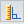

Measure a normal distance from a plane or line to a keypoint
-
Choose Inspect tab→3D Measure group→Normal Distance

. -
Using the Element Types box on the Measure Normal Distance command bar, define the type of elements you want to measure from.
-
Select an element to measure from.
-
Select a keypoint to measure to.
Tip:-
You can use the Keypoint option on the Measure Normal Distance command bar to specify the type of keypoint you want to identify when measuring the distance.
-
You can select a user-defined coordinate system to define one of the points. If you use a coordinate system, the returned values will be relative to the specified coordinate system.
-
You can copy the measurement value to the Clipboard by highlighting the value and pressing Ctrl+C.
-
How do I
Measure an angleMeasure the minimum distance between two elements
Inquire about an element
Look up more details
3D Measure commandMeasure distance command
Measure Minimum Distance command
Measure Minimum Distance command bar
Measure Normal Distance command
Measure Normal Distance command bar
Inquire Element command
Inquire Element command bar
Measure Angle command
Measure Angle command bar